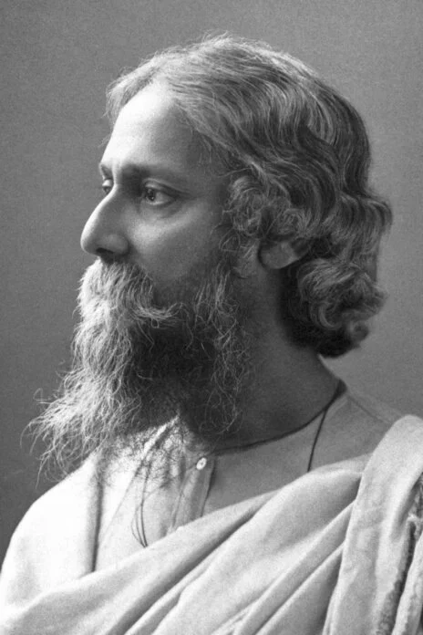

Rabindaranath-Tagore
(1861-1941)
Gurudeb, Kobiguru, Biswokobi.
R
abindranath Tagore (1861-1941) was the youngest son of Debendranath Tagore, a leader of the Brahmo Samaj, which was a new religious sect in nineteenth-century Bengal and which attempted a revival of the ultimate monistic basis of Hinduism as laid down in the Upanishads. He was educated at home; and although at seventeen he was sent to England for formal schooling, he did not finish his studies there. In his mature years, in addition to his many-sided literary activities, he managed the family estates, a project which brought him into close touch with common humanity and increased his interest in social reforms. He also started an experimental school at Shantiniketan where he tried his Upanishadic ideals of education. From time to time he participated in the Indian nationalist movement, though in his own non-sentimental and visionary way; and Gandhi, the political father of modern India, was his devoted friend. Tagore was knighted by the ruling British Government in 1915, but within a few years he resigned the honour as a protest against British policies in India. Tagore had early success as a writer in his native Bengal. With his translations of some of his poems he became rapidly known in the West. In fact his fame attained a luminous height, taking him across continents on lecture tours and tours of friendship. For the world he became the voice of India’s spiritual heritage; and for India, especially for Bengal, he became a great living institution. Although Tagore wrote successfully in all literary genres, he was first of all a poet. Among his fifty and odd volumes of poetry are Manasi (1890) [The Ideal One], Sonar Tari (1894) [The Golden Boat], Gitanjali (1910) [Song Offerings], Gitimalya (1914) [Wreath of Songs], and Balaka (1916) [The Flight of Cranes]. The English renderings of his poetry, which include The Gardener (1913), Fruit-Gathering (1916), and The Fugitive (1921), do not generally correspond to particular volumes in the original Bengali; and in spite of its title, Gitanjali: Song Offerings (1912), the most acclaimed of them, contains poems from other works besides its namesake. Tagore’s major plays are Raja (1910) [The King of the Dark Chamber], Dakghar (1912) [The Post Office], Achalayatan (1912) [The Immovable], Muktadhara (1922) [The Waterfall], and Raktakaravi (1926) [Red Oleanders]. He is the author of several volumes of short stories and a number of novels, among them Gora (1910), Ghare-Baire (1916) [The Home and the World], and Yogayog (1929) [Crosscurrents]. Besides these, he wrote musical dramas, dance dramas, essays of all types, travel diaries, and two autobiographies, one in his middle years and the other shortly before his death in 1941. Tagore also left numerous drawings and paintings,and songs for which he wrote the music himself.

- Rabindranath Tagore The Nobel Prize in Literature 1913
- Born: 7 May 1861, Calcutta, India
- Died: 7 August 1941, Calcutta, India
- Residence at the time of the award: India
- prePrize motivation: “because of his profoundly sensitive, fresh and beautiful verse, by which, with consummate skill, he has made his poetic thought"
- Language: Bengali, English
- Prize share: 1/1
Read more about Rabindaranath-Tagore Ckick on click hear